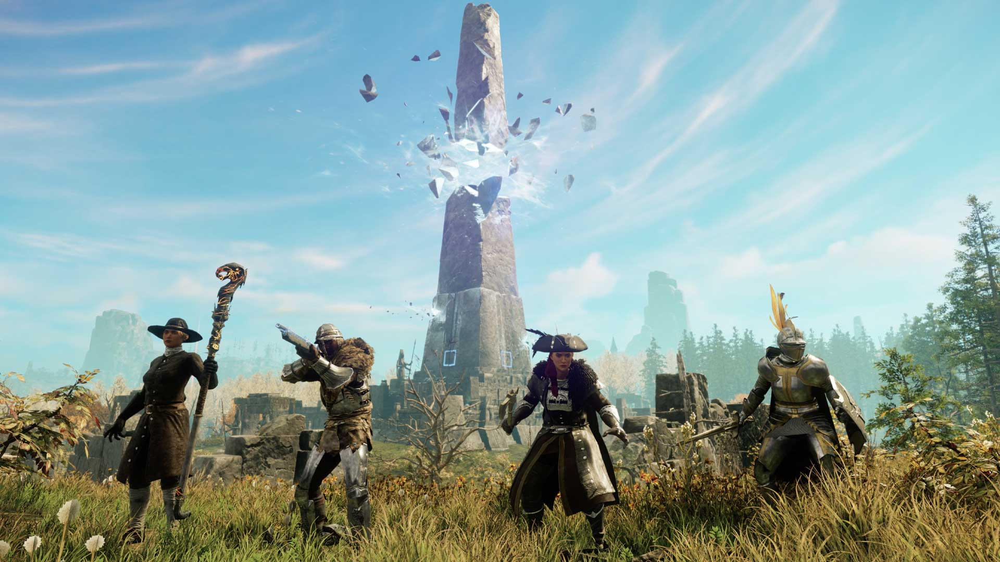

Territories of Aeternum

Fixed an issue where equipment couldnt be upgraded while storage was opened, if there were umbral shards in storage.
Fixed an issue that could cause players in PvP to enter a state where their movement speed was incorrectly adjusted for long periods of time.
Fixed an issue where the same player could be listed multiple times on the War/Invasion roster list.
Thanks for your support! We'll see you in Aeternum.
New World Update 1.3.2 downtime will begin at 11pm PT (7am UTC) on February 9.
Greetings, Adventurer!
This weeks update includes a few fixes and changes for the end-game, alongside some additional updates.
END-GAME UPDATES & FIXES
Fixed an issue where the unlock messaging was inconsistent on higher Mutator difficulties. Difficulties 1 - 5 still states Silver rank is required and difficulty 6 - 10 now state Gold rank is required.Fixed an issue where equipment couldnt be upgraded while storage was opened, if there were umbral shards in storage.
GENERAL UPDATES & FIXES
The Absolute Terror items second Keen perk has been replaced with the Refreshing perk.Fixed an issue that could cause players in PvP to enter a state where their movement speed was incorrectly adjusted for long periods of time.
Fixed an issue where the same player could be listed multiple times on the War/Invasion roster list.
Thanks for your support! We'll see you in Aeternum.